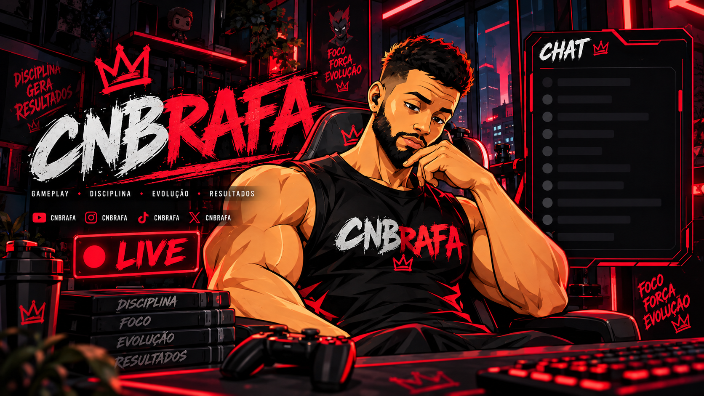

HUB REALTIMECONECTANDO...
GAMEPLAY • DISCIPLINA • EVOLUÇÃO • RESULTADOS
CNBRAFA
Um hub feito para transformar a live em experiência: escolha jogos, envie conteúdos para react, participe das decisões e acione interações conectadas à Twitch.
DISCIPLINA♛FOCO♛FORÇA♛EVOLUÇÃO♛RESULTADOS♛
DISCIPLINA♛FOCO♛FORÇA♛EVOLUÇÃO♛RESULTADOS♛
00 / CENTRAL DE CONTROLE
A live vira um jogo coletivo
Um painel único e compartilhado: jogo atual, missão, votação global, fila moderada de reacts, recompensas e atividade da comunidade atualizados em tempo real.
MISSÃO DA LIVE
0%Ativar a comunidade
Cada interação registrada alimenta a meta da sessão.
0 / 100PROGRESSO DA MISSÃO
COMBO DA COMUNIDADENível 1
0ENERGIA
Desafio coletivo: usar votos, reacts e recompensas para movimentar a live.
RANKING AO VIVO
VER TODOS →Jogo mais pedido
AÇÕES COLETIVAS
Entre na partida
PULSO DA LIVE
LOCALEventos recentes
Aguardando a primeira ação da comunidade.
RECOMPENSAS ATIVAS
6Pontos que fazem acontecer
V5 compartilhada: além do hub em tempo real, missão, ranking, reacts, eventos, alertas e status da live agora podem ser usados diretamente como Browser Sources transparentes no OBS.
IDENTIDADE / CNBRAFA
O canal virou um universo visual
A linguagem do site segue a estética das suas overlays: preto, vermelho neon, textura urbana, interface de streaming, coroas e elementos de evolução.

CNBRAFA // VISUAL CORE
Jogar. Evoluir. Conquistar.
A arte deixa de ser só fundo e passa a fazer parte da navegação, das transições e das respostas do site às ações da comunidade.
01 / CRONOGRAMA
Quando a live acontece
O cronograma agora é salvo no banco e pode ser alterado pelo Painel do Criador. Todos os visitantes recebem a atualização automaticamente.
HUB...
Carregando cronograma
Conectando ao banco de dados da comunidade.
--:--
02 / ESCOLHER JOGOS
A comunidade decide
Escolha o jogo que você mais quer ver. Seu voto é salvo no hub compartilhado e o ranking muda para todos em tempo real.
03 / REACTS
Mande algo que merece reação ao vivo
Envie vídeo, meme, trailer, clipe ou curiosidade. A fila é pensada para moderação antes de aparecer na live.
01
Use links públicos e apropriados para transmissão.
02
Dê um contexto curto para facilitar a seleção.
03
O envio entra na fila — não abre automaticamente na live.
04 / TWITCH INTERACTION SYSTEM
Pontos que viram acontecimentos
Esta versão tem um laboratório funcional e também uma integração real opcional: autentica o broadcaster, sincroniza recompensas e pode ouvir novos resgates em tempo real.
CONEXÃO TWITCH
Modo demonstração ativo
Teste todas as interações sem precisar configurar API.
DEMO EVENTSUB OFF
RECOMPENSAS DO CANAL
Twitch Channel Points
Modo demoAo conectar a conta do broadcaster, as recompensas e custos reais podem aparecer aqui.
FOCO • FORÇA • EVOLUÇÃOA LIVE NÃO É SÓ ASSISTIDA.
ELA É JOGADA JUNTO.
ELA É JOGADA JUNTO.
05 / CONTATO
Collab, parceria ou projeto?
Monte uma mensagem e copie para o canal de contato que preferir. Na evolução do site, esta área pode ser ligada a e-mail ou backend.